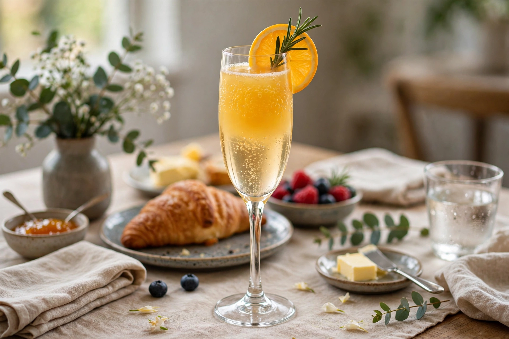

A mimosa is a cocktail composed of equal parts champagne (or other sparkling wine) and chilled citrus juice, usually orange juice. Traditionally served in a tall champagne flute at brunch, weddings and celebrations, it is named after the yellow flowers of the mimosa plant (Acacia dealbata).

| Type | Wine cocktail |
|---|---|
| Ingredients | Champagne, orange juice (1:1) |
| Served | Straight up, champagne flute |
| IBA official | Yes |
The drink is generally credited to Frank Meier at the Hôtel Ritz Paris around 1925. A similar drink, Buck's Fizz (two parts champagne to one part orange juice, sometimes with grenadine), had been created at Buck's Club in London in 1921. Alfred Hitchcock is often credited with popularising the mimosa as a brunch drink in the United States in the 1940s.
The IBA recipe combines 75 ml champagne and 75 ml fresh orange juice in a flute, stirred gently. Variations include the Poinsettia (cranberry juice), Lemosa (lemonade), grapefruit mimosa, and the Grand Mimosa with a dash of Grand Marnier. "Bottomless mimosas" are a fixture of American brunch service. Compare michelada and Bellini.